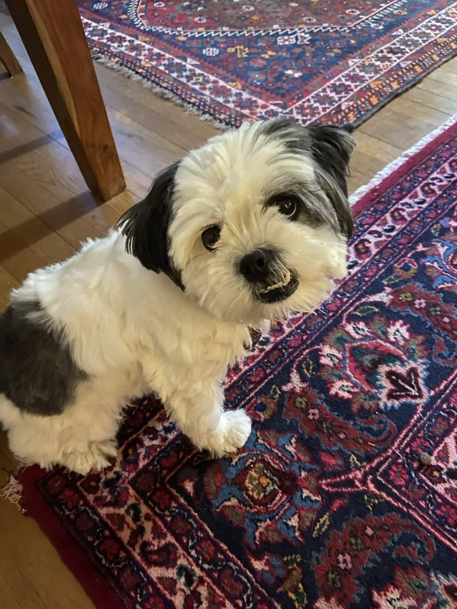
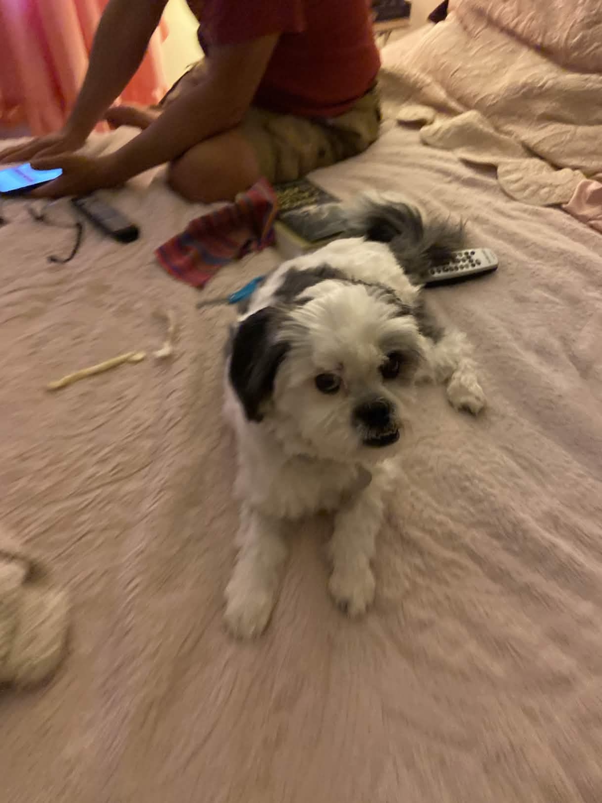
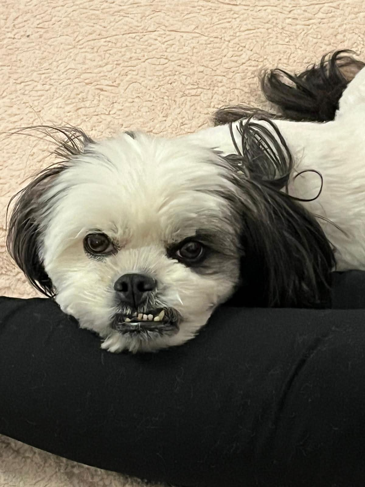
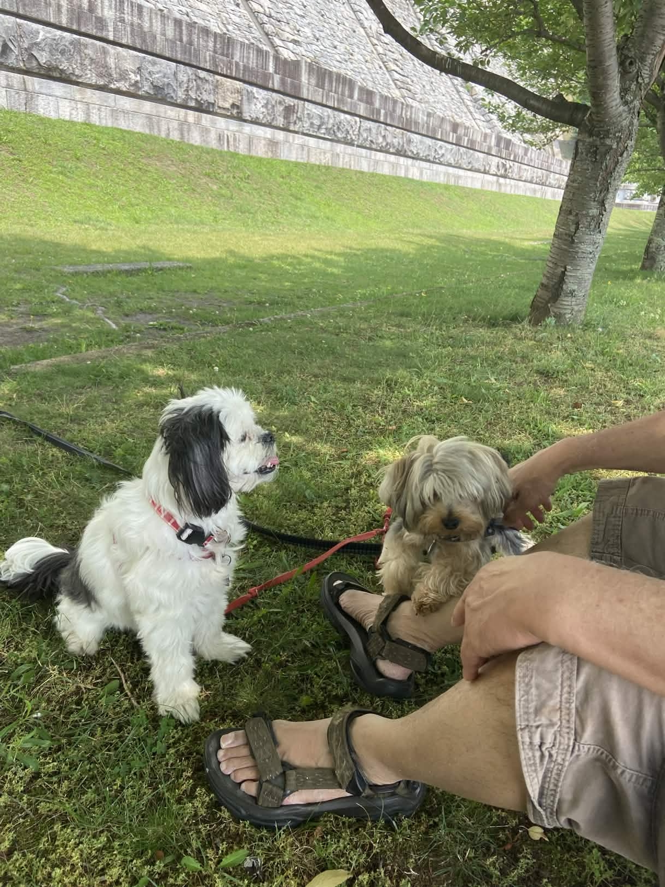
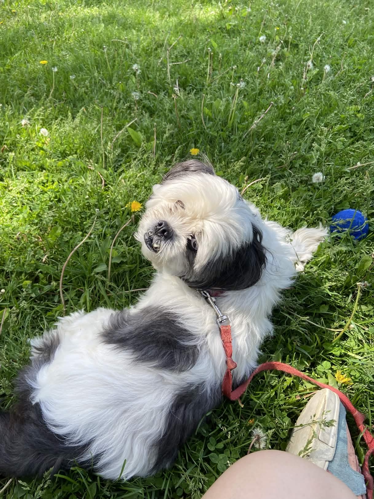
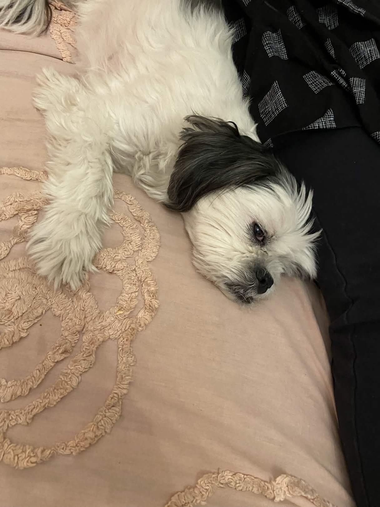
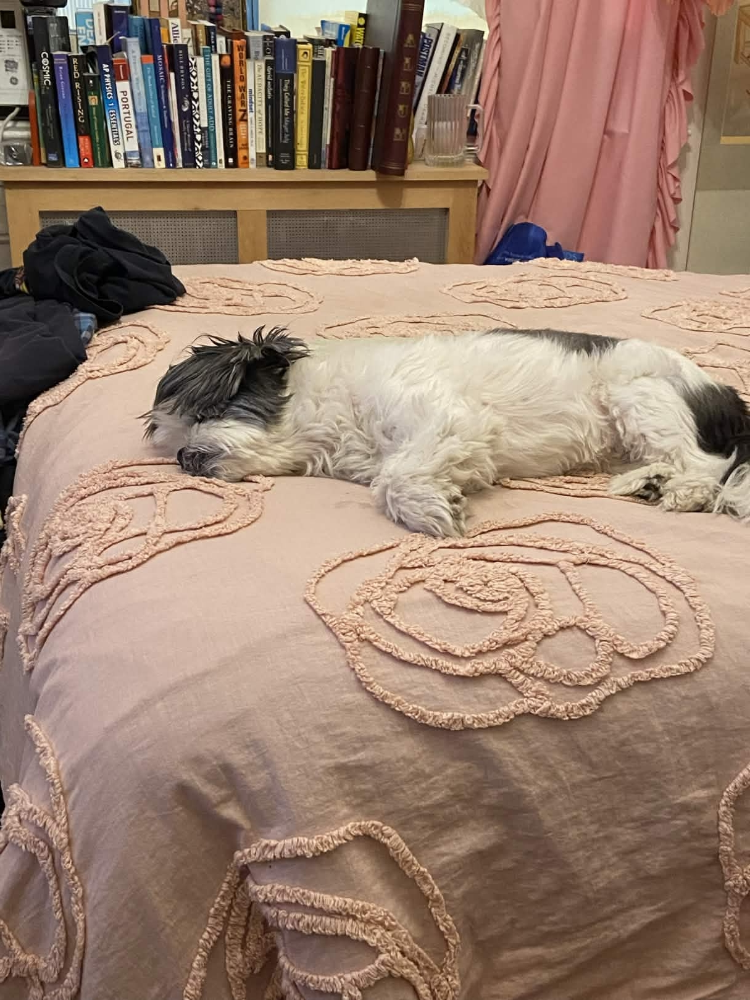
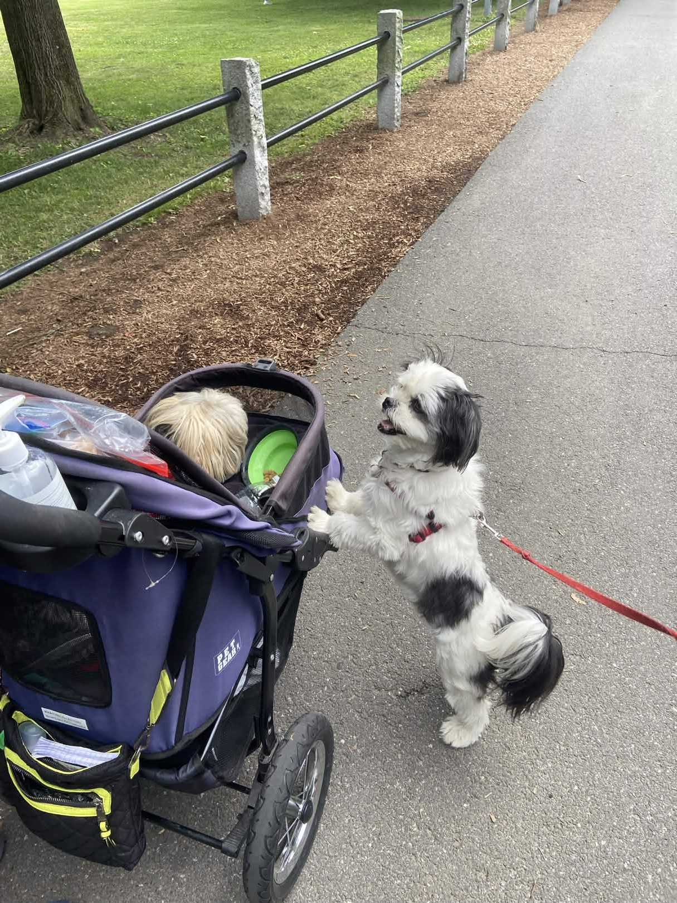
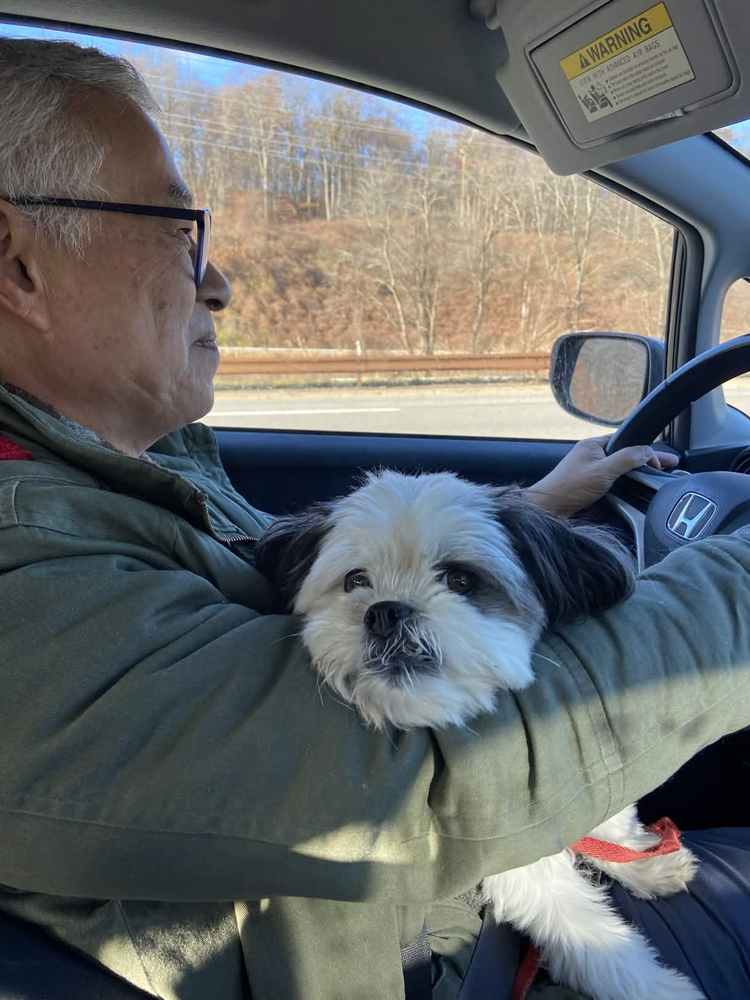
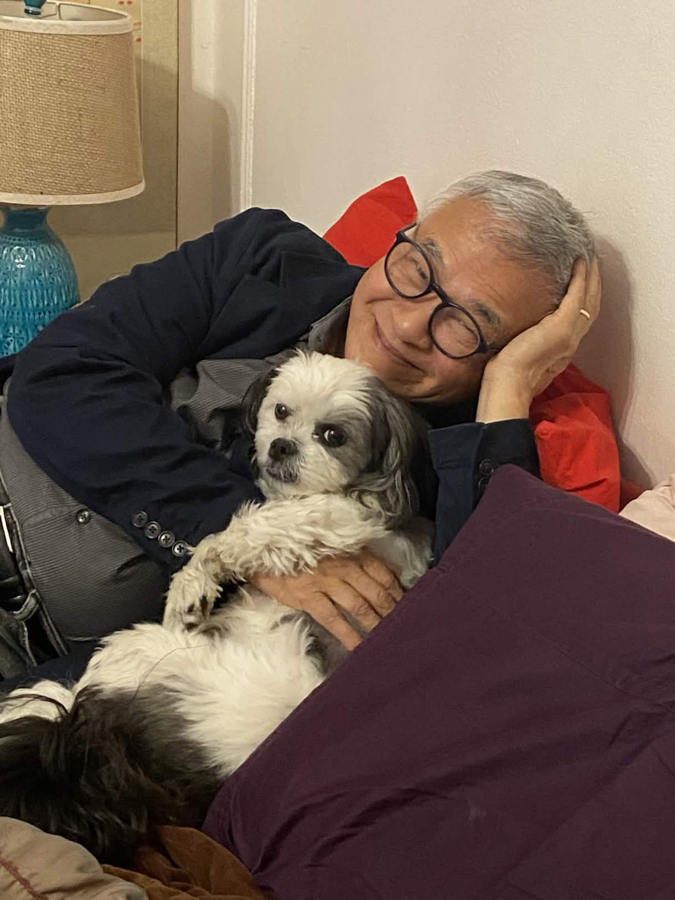

CODY
CAPTAIN OF THE DISCOVERY
USS BISCUIT · STARDATE 2026.04
Chapter One
I
THE MISSION
📡
Stardate 47634.44.
The USS Biscuit cruised through the Outer Bone Nebula —
a shaggy, ancient part of the galaxy
that smelled faintly of treats.
The USS Biscuit cruised through the Outer Bone Nebula —
a shaggy, ancient part of the galaxy
that smelled faintly of treats.

The Captain had been staring at the viewscreen for six hours.
Nobody asked why.
Nobody asked why.

No one questioned the Captain's authority.
Not after they saw the teeth.
Not after they saw the teeth.

Chief Scientist Bob ran the calculations.
He was rarely wrong.
He was, however, a menace behind the wheel.
He was rarely wrong.
He was, however, a menace behind the wheel.
👨🔬
Bob — Chief Scientist
The signal pattern is unlike anything in the Federation database.
The waveform has rhythm. Structure. Intentionality.
👩💼
Leora — Linguistics
I've been analyzing it for six hours. Dad — Dr. Chen — it's not noise.
It's not a distress beacon. The signal is music.
Someone out there is singing.
🐕
Capt. Cody
*one short, decisive bark*
Engage.
Engage.

Before the stars, there was the park.
Cody missed the park.
He did not miss the leash.
Cody missed the park.
He did not miss the leash.
Chapter Two
II
FIRST CONTACT
✦ 💎 ✦
At the heart of the nebula:
the Glimmerfins.
Crystalline beings made of pure harmonic energy,
their bodies refracting starlight into
cascading rainbows.
the Glimmerfins.
Crystalline beings made of pure harmonic energy,
their bodies refracting starlight into
cascading rainbows.
💎
Glimmerfin Elder
~[a rising harmonic — joy shaded with terror, the frequency of a door held barely open]~
👩💼
Leora
They're welcoming us. But underneath —
there's panic. They're terrified and trying to hide it with music.
👩⚕️
Sue — Ship's Counselor
…That's not unfamiliar.
✦ · · · ✦
They had a name for what hunted them.
The Void Hunters.
The Devourers of Frequency.
In forty cycles, they had lost
forty of their kind.
The Void Hunters.
The Devourers of Frequency.
In forty cycles, they had lost
forty of their kind.

Captain Cody processed the situation the way he processed everything:
completely, totally, and with great physical commitment.
completely, totally, and with great physical commitment.
Chapter Three
III
THE VOID HUNTERS
⚫ ⚫ ⚫
They came like a held breath
before a scream.
And where they passed,
light simply stopped.
before a scream.
And where they passed,
light simply stopped.
⚠ ALERT: Power grid fluctuation — Decks 3–7 offline
⚠ Shields: 12% · Life support: nominal (for now)
⚠ Snack dispenser Deck 4: OFFLINE — crew morale: declining
⚠ Shields: 12% · Life support: nominal (for now)
⚠ Snack dispenser Deck 4: OFFLINE — crew morale: declining
👨🔧
Vance — Engineering
Captain, main power is dropping. Twenty minutes before emergency reserves.
Also the snack dispenser thing is personally devastating to me.

The Captain did not panic.
He had survived worse.
He had survived baths.
He had survived worse.
He had survived baths.

He had, in fact, been conserving energy for exactly this moment.
This is what leadership looks like.
This is what leadership looks like.

Cody had not always commanded a starship.
Once, he had been commanded by a stroller.
The journey had been long.
Once, he had been commanded by a stroller.
The journey had been long.
👩⚕️
Sue — Alien Relations Officer
I'm opening a direct channel. Not subspace. No technology.
Twenty years as a therapist. I know what grief looks like —
even when it's wearing a shadow for a face.
⚫
Void Hunter
~[a sensation, not a sound: vast emptiness. The ache of forgetting something essential.]~
Chapter Four
IV
LOSING THE SHIP
🔴 CRITICAL: Main power offline · Auxiliary offline
Emergency reserves: 4% · Hull integrity: 94%
Emergency reserves: 4% · Hull integrity: 94%
👨🔬
Bob
I need 40 seconds of power — just 40 — to reboot the harmonic dampeners.
Vance, pull from the warp coil manifold.
👨🔧
Vance
That's not how warp coils work. But we're so far past "how things work"
that I'm just gonna try it. Stand very far back.

Bob had driven through worse situations than this.
Much, much worse.
Cody had always kept him calm.
Much, much worse.
Cody had always kept him calm.
👩⚕️
Sue
You've been wandering for a long time. You've forgotten why.
You've forgotten what you were looking for. That's not evil.
That's grief.
That's grief.
⚫
Void Hunter
~[silence. A trembling. Something that might, once, have been called: hope.]~

Captain Cody rose.
This was the moment he had been born for.
The bridge fell silent.
This was the moment he had been born for.
The bridge fell silent.
Chapter Five
V
HOME
✦ ✧ 💎 ✧ ✦
The Glimmerfins offered their
harmonic frequency as a beacon —
"So you can always
find your way back."
harmonic frequency as a beacon —
"So you can always
find your way back."
⚫ · · ⚫
The Void Hunters departed —
no longer devouring,
but listening.
Following a signal.
Going home.
no longer devouring,
but listening.
Following a signal.
Going home.
✅ POWER RESTORED — All systems nominal
✅ Shields: 100% · Life support: stable
⚠ Snack dispenser Deck 4: still offline (ongoing)
✅ Shields: 100% · Life support: stable
⚠ Snack dispenser Deck 4: still offline (ongoing)
👨🔧
Vance
She's back! I don't know if it was the warp coil thing
or the therapy but I am absolutely taking credit.
👨🔬
Bob
*wiping eyes* It's the nebula particles. They're very… particulate.
I'm fine. Completely fine.

Mission complete.
The Captain's work was done.
Behind him: AP Physics. Sci-fi novels. A universe of questions.
The Captain's work was done.
Behind him: AP Physics. Sci-fi novels. A universe of questions.

He was not fully asleep.
He was conserving command authority
for the debrief.
He was conserving command authority
for the debrief.

The mission was done. The crew was safe.
Bob was smiling.
This almost never happened.
Bob was smiling.
This almost never happened.

Chief Scientist Bob held the Captain close.
There was no mission debrief.
There was no after-action report.
There was only this.
There was no mission debrief.
There was no after-action report.
There was only this.
✦ The Moral of Our Story ✦
"The things that seem most threatening
are often just lost —
and looking for connection."
are often just lost —
and looking for connection."
CODY
CAPTAIN OF THE DISCOVERY
Captain · Cody
Chief Scientist & Best Dad · Bob
Ship's Counselor / Alien Relations · Sue
Chief Linguist · Leora
Engineering (Heroic, Asleep) · Vance
The Glimmerfins · Unknown Origin · Good Vibes
The Void Hunters · Just Lost · Found Their Way Home
Chief Scientist & Best Dad · Bob
Ship's Counselor / Alien Relations · Sue
Chief Linguist · Leora
Engineering (Heroic, Asleep) · Vance
The Glimmerfins · Unknown Origin · Good Vibes
The Void Hunters · Just Lost · Found Their Way Home
✦ TO BE CONTINUED ✦